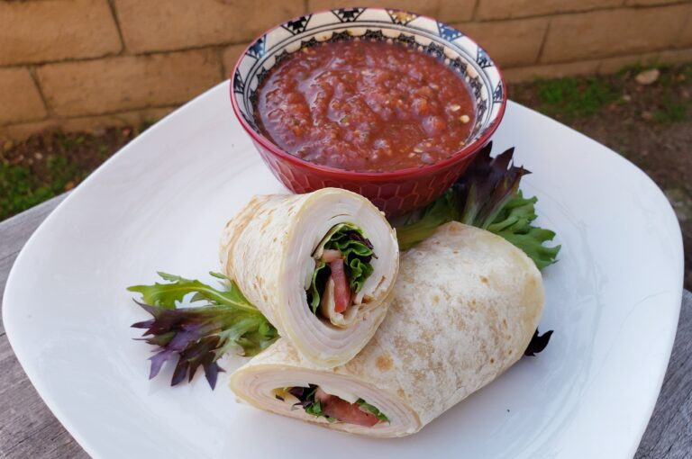

Turkey Wrap

Description
Indulge in our fresh and flavorful Turkey Wrap, the perfect blend of taste and
convenience. Tender, thinly sliced turkey breast is layered with crisp lettuce,
juicy tomatoes, and creamy avocado, all wrapped in a soft, whole wheat tortilla.
Each bite is a delightful combination of savory turkey, refreshing veggies,
and a hint of tangy sauce that ties it all together. Ideal for a quick lunch
or a light dinner, our Turkey Wrap is a satisfying and wholesome choice that
will leave you feeling nourished and satisfied.
Ingredients
- 1 1/2 Tablespoons Vegetable Oil (Divded)
- 5 Flour Tortillas (10 inch)
- 5 Tablespoons "Best Foods" Mayonaise
- 1 Bag Spring Mix (5 oz)
- 20 Slices of Oven Roasted Turkey
- 1 Package Sliced Swiss Cheese (You can substitute with
sliced Monterey Jack cheese.)
- 1 Roma Tomato (Thinly Sliced)
- 1 Large Avocado (Thinly Sliced)
Serve With:
- Restaurant Style Salsa
Steps
- On medium heat, pour in 1/2 a teaspoon of cooking oil into the pan.
Once the pan is warm, place in a flour tortilla and cook it for 1-2 minutes.
- Cook the other side for 1 minute. Then transfer to a cutting board and allow
the tortilla to cool for 2 minutes.
- Spread the mayonaise onto the entire surface of the tortilla.
- Next lay 2 to 4 slices of the oven roasted turkey across the bottom of the tortilla.
I added 4 slices but you can use just 2 if you want.
- Then add either 1 or 2 slices of cheese. If you just want to use 1 slice of cheese then tear it
in half lengthwise and lay it across the tortilla . Otherwise if you want to use 2 slices of
cheese then just lay the two full slices across the tortilla.
- Add 2 slices of avocado.
- Add some of the mixed spring lettuce.
- Lastly add 3 slices of tomatoes.
- Then roll it up and cut it in half.
- Serve with some restaurant style salsa.